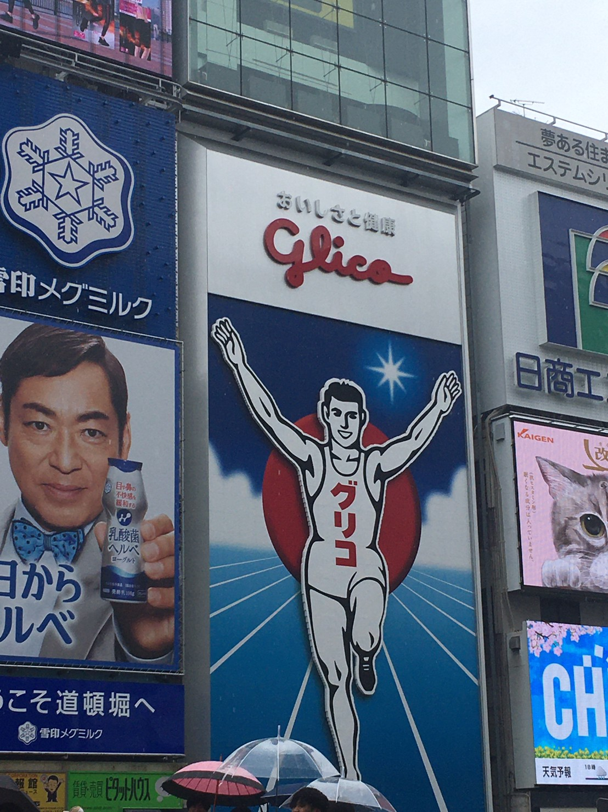
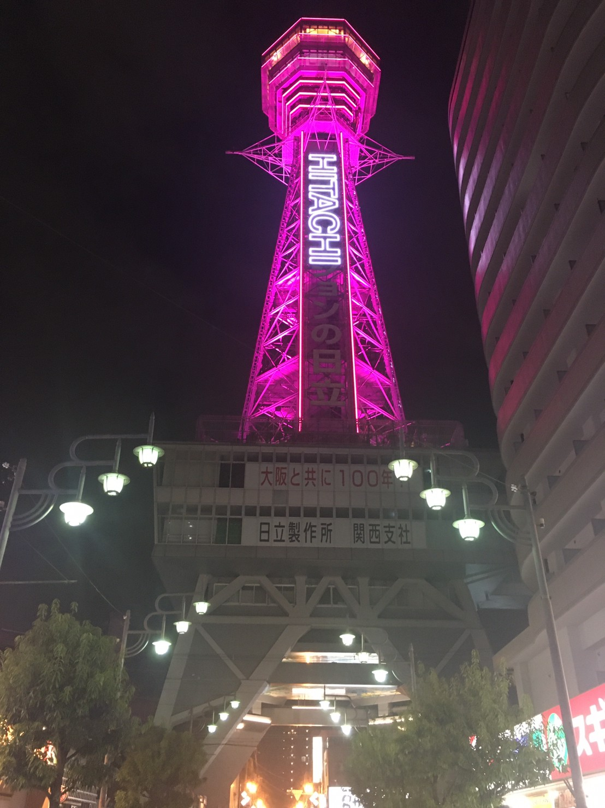
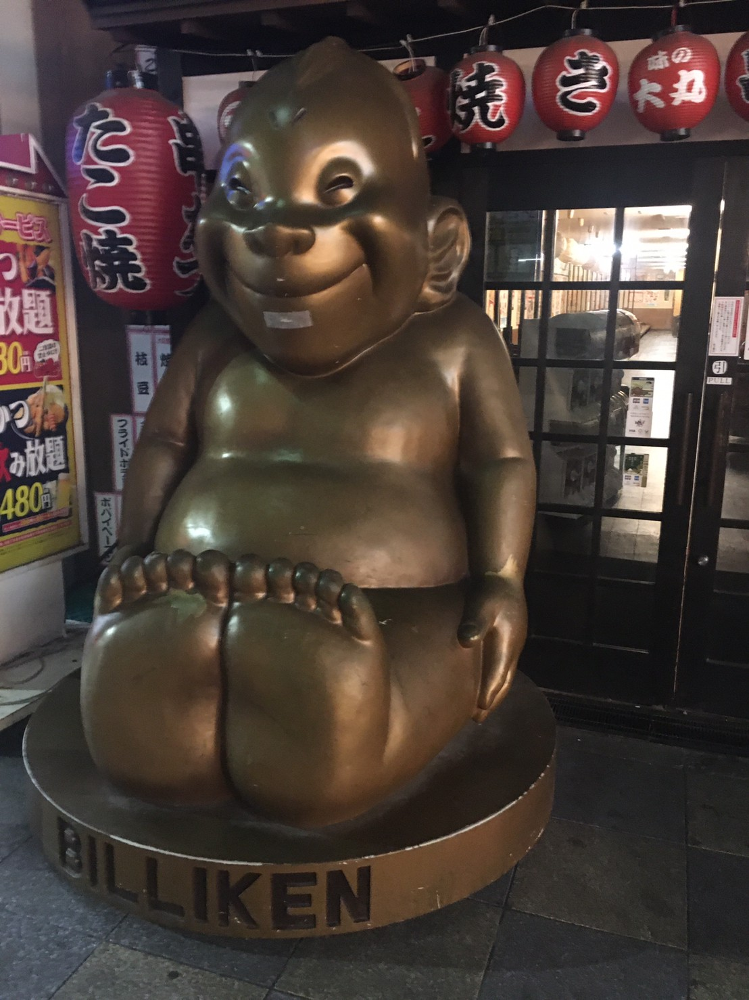
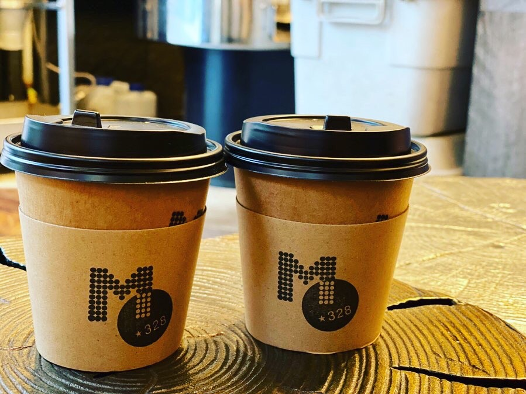
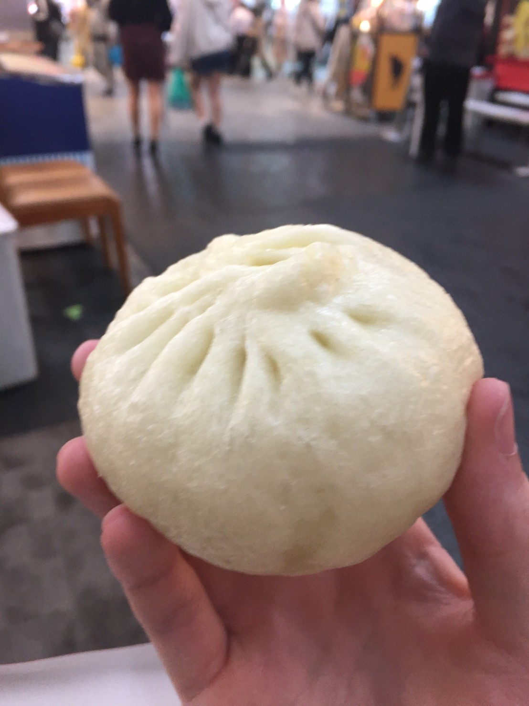
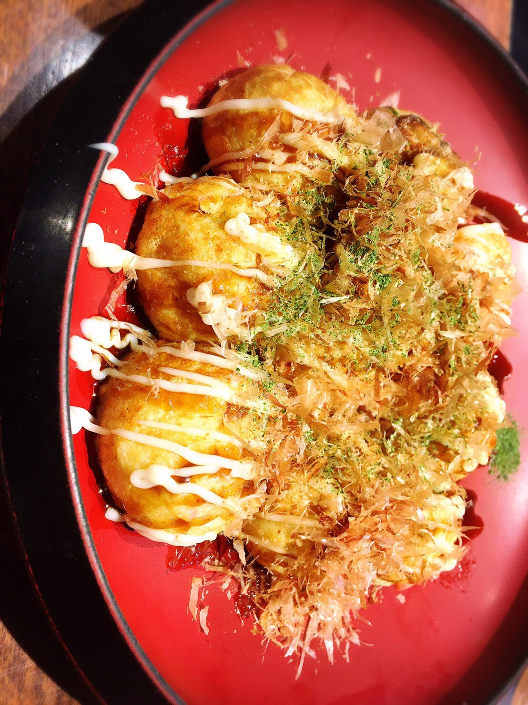

大阪府
東京都，神奈川県に日本第３位の人口規模を持つ．また，大阪市内にはテーマパークを有する．

大阪市


アベノハルカスや通天閣，道頓堀，天守閣，ユニバーサルスタジオジャパンなど，多くの観光地を有する．
また，食い倒れの街と称されるほど，食道楽の文化が盛ん．
大阪名物



「京都の着倒れ，大阪の食い倒れ」という言葉があるほど，食文化に親しまれている．海の幸・山の幸に恵まれ，江戸時代には，「天下の台所」と謳われるほどに，全国の食材が集まった．
お好み焼き，たこ焼き，串揚げが代表的な食べ物で，中でも大阪名物「551蓬莱」の豚まんはお土産としても人気．